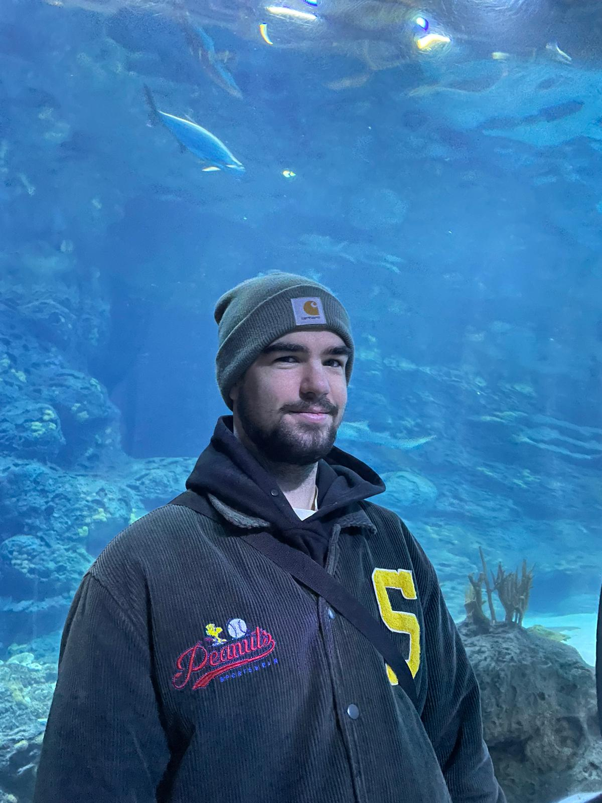

About Me
Developer & Designer
I am a student at GLR in my first year of coding and before i started coding i had a different education in ICT.
I did System & Devices at Davinci College in Dordrecht and thats where i layed the base for computers and Tech.
From when i was very young i alreafy had a interest in computers and how they work and thats why i perseud this
to become a well educated developer and Designer.